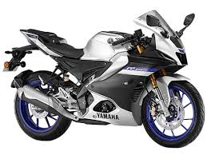
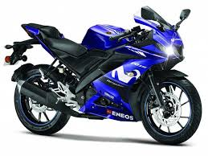
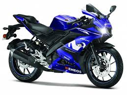

🏍️Motocicletas
🤝Credito
📞Contactos
Bienvenidos a la mejor empresa de motocicletas

Yamaha Motors se establece en Argentina en diciembre de 1995, contando con el apoyo su casa matriz e
importando motos de 2 y 4 tiempos, cuatriciclos, motos de agua, motores fuera de borda, generadores
eléctricos y motores internos Diesel. En octubre de 2007 abre su primera planta en Argentina, más
precisamente en la localidad bonaerense de Ituzaingó.
El primer modelo producido es la YBR125, una motocicleta de calle. Posteriormente, se le sumó la XTZ 125 y en enero de 2011, la FZ16.2 La nueva
sede posee 4500 metros cuadrados de superficie, en la que también se comercializan piezas de
reposición y se brinda asistencia a los compradores, junto con la atención al cliente. Fue parte de
la inauguración Takashi Kajikawa, presidente mundial de Yamaha Motor. En octubre de 2010, celebra
las 50000 unidades producidas en la planta argentina con nuevas inversiones.
Desde agosto de 2014 es el patrocinador principal del Club Atlético Lanús de la Primera División de
Argentina.
Yamaha en competiciones
La fábrica está involucrada en el campeonato de MotoGP, en el que consiguió ocho campeonatos
mundiales en 2004, 2005, 2008, 2009, 2010, 2012, 2015 y 2021 de la mano de Valentino Rossi, Jorge
Lorenzo y Fabio Quartararo respectivamente con el equipo Movistar Yamaha MotoGP.
 Yamaha produjo motores de Fórmula 1 de 1989 a 1997 (con una pausa de un año en 1990), inicialmente
para el equipo Zakspeed, en 1991 para el Brabham BT60Y, en 1992 para el Jordan 192, de 1993 a 1996
para Tyrrell y en 1997. para las Flechas A18. Los motores Yamaha nunca ganaron una carrera (Damon
Hill casi lo hizo en el Gran Premio de Hungría de 1997), pilotos como Damon Hill, Ukyo Katayama,
Mark Blundell y Mika Salo obtuvieron algunos resultados aceptables. Blundell logró un sorprendente
tercer lugar en el Gran Premio de España de 1994, mientras que Hill coronaría con el segundo lugar
en el Gran Premio de Hungría de 1997. Estos resultados se habían considerado debido a que en parte,
Yamaha colaboró con la John Judd Engine Organization para crear un motor mejor y confiable; sin
embargo, surgieron dudas sobre si los motores Yamaha utilizados desde 1993 hasta 1997, eran solo
motores Judd rebautizados como Yamaha.
1994 fue considerado el año más exitoso de Yamaha en términos de puntos acumulados; aparte del podio
logrado por Blundell en España, el motor Yamaha en el Tyrrell Car logró 4 quintos puestos y 1 sexto
puesto a lo largo de la temporada. Debido a la inconsistencia del motor a lo largo de los años, a
menudo eran poco confiables y generalmente se los consideraba no muy potentes, el motor impulsado
por Yamaha nunca consiguió una vuelta más rápida o una pole position a pesar de estar en la parrilla
durante casi una década.

Después de la conclusión de la temporada de Fórmula 1 de 1997, Yamaha decidió retirarse del deporte,
una posible razón para esto fue debido a un desacuerdo con Arrows con respecto a la identificación
del motor de 1998. Yamaha deseaba realizar trabajos en el motor con sus ingenieros mientras Arrows
deseaba que sus propios ingenieros trabajaran en el motor sin dejar de tenerlo como motor Yamaha.
Finalmente, Yamaha terminó rompiendo la sociedad, retirándose de la Fórmula 1 y dejando sus motores
en poder de la escudería Arrows, quienes finalmente terminaron rebautizándolos con su propio nombre.
Yamaha es una empresa japonesa fundada en 1887 que fabrica una amplia gama de productos, incluyendo
motocicletas, instrumentos musicales, equipos de audio, motores marinos y productos electrónicos.
La Yamaha YZF-R6 se introdujo en 1999 como la versión Superbike de la Yamaha YZF-R1 hyperbike, y
como
un complemento de la calle más orientado Yamaha YZF600R moto deportiva que continuó siendo vendido
junto con la R6. La motocicleta ofrecido completamente nuevo diseño de Yamaha con motor capaz de
producir más de 108 CV (81 kW), mientras está parada. La R6 fue la primera producción mundial de
600cc de cuatro tiempos de motos capaces de producir más de 100 CV (75 kW).
La YZF-R6 ha sido revisada varias veces desde su introducción. A partir del modelo 2003, se
convirtió en la R6 de inyección de combustible . El modelo del año 2006 fue una importante
actualización con un sistema de gestión del motor nuevo con el YCC-T paseo por cable del acelerador
y un multi-placa de embrague deslizante . El modelo 2008 incorpora el sistema YCC-I de longitud
variable sistema de admisión para optimizar la potencia al motor de alto rpm y un diseño mejorado
Deltabox marco.
Yamaha produjo motores de Fórmula 1 de 1989 a 1997 (con una pausa de un año en 1990), inicialmente
para el equipo Zakspeed, en 1991 para el Brabham BT60Y, en 1992 para el Jordan 192, de 1993 a 1996
para Tyrrell y en 1997. para las Flechas A18. Los motores Yamaha nunca ganaron una carrera (Damon
Hill casi lo hizo en el Gran Premio de Hungría de 1997), pilotos como Damon Hill, Ukyo Katayama,
Mark Blundell y Mika Salo obtuvieron algunos resultados aceptables. Blundell logró un sorprendente
tercer lugar en el Gran Premio de España de 1994, mientras que Hill coronaría con el segundo lugar
en el Gran Premio de Hungría de 1997. Estos resultados se habían considerado debido a que en parte,
Yamaha colaboró con la John Judd Engine Organization para crear un motor mejor y confiable; sin
embargo, surgieron dudas sobre si los motores Yamaha utilizados desde 1993 hasta 1997, eran solo
motores Judd rebautizados como Yamaha.
1994 fue considerado el año más exitoso de Yamaha en términos de puntos acumulados; aparte del podio
logrado por Blundell en España, el motor Yamaha en el Tyrrell Car logró 4 quintos puestos y 1 sexto
puesto a lo largo de la temporada. Debido a la inconsistencia del motor a lo largo de los años, a
menudo eran poco confiables y generalmente se los consideraba no muy potentes, el motor impulsado
por Yamaha nunca consiguió una vuelta más rápida o una pole position a pesar de estar en la parrilla
durante casi una década.

Después de la conclusión de la temporada de Fórmula 1 de 1997, Yamaha decidió retirarse del deporte,
una posible razón para esto fue debido a un desacuerdo con Arrows con respecto a la identificación
del motor de 1998. Yamaha deseaba realizar trabajos en el motor con sus ingenieros mientras Arrows
deseaba que sus propios ingenieros trabajaran en el motor sin dejar de tenerlo como motor Yamaha.
Finalmente, Yamaha terminó rompiendo la sociedad, retirándose de la Fórmula 1 y dejando sus motores
en poder de la escudería Arrows, quienes finalmente terminaron rebautizándolos con su propio nombre.
Yamaha es una empresa japonesa fundada en 1887 que fabrica una amplia gama de productos, incluyendo
motocicletas, instrumentos musicales, equipos de audio, motores marinos y productos electrónicos.
La Yamaha YZF-R6 se introdujo en 1999 como la versión Superbike de la Yamaha YZF-R1 hyperbike, y
como
un complemento de la calle más orientado Yamaha YZF600R moto deportiva que continuó siendo vendido
junto con la R6. La motocicleta ofrecido completamente nuevo diseño de Yamaha con motor capaz de
producir más de 108 CV (81 kW), mientras está parada. La R6 fue la primera producción mundial de
600cc de cuatro tiempos de motos capaces de producir más de 100 CV (75 kW).
La YZF-R6 ha sido revisada varias veces desde su introducción. A partir del modelo 2003, se
convirtió en la R6 de inyección de combustible . El modelo del año 2006 fue una importante
actualización con un sistema de gestión del motor nuevo con el YCC-T paseo por cable del acelerador
y un multi-placa de embrague deslizante . El modelo 2008 incorpora el sistema YCC-I de longitud
variable sistema de admisión para optimizar la potencia al motor de alto rpm y un diseño mejorado
Deltabox marco.